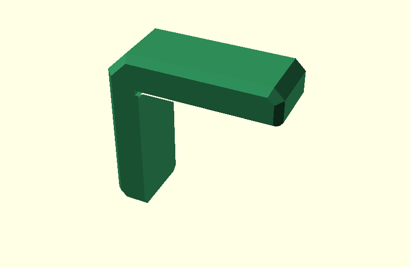
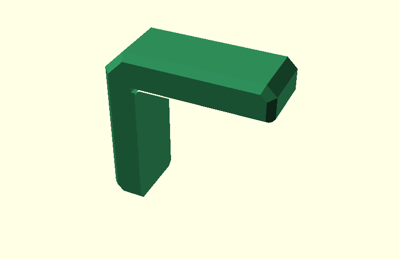
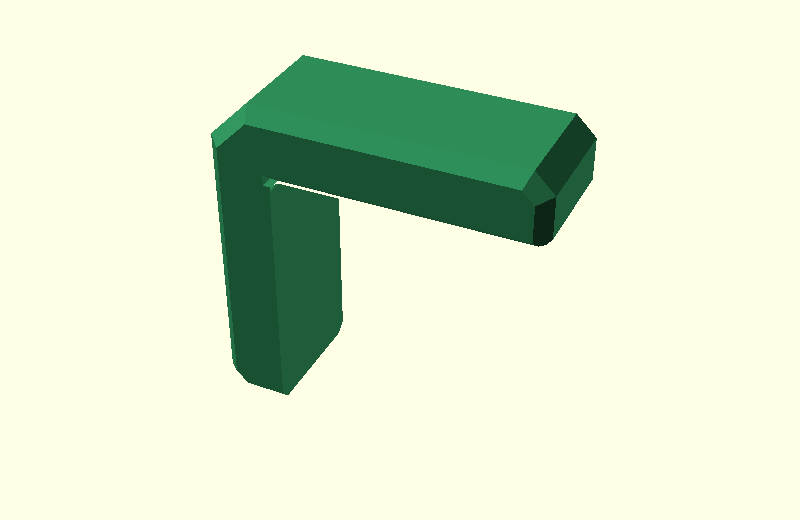
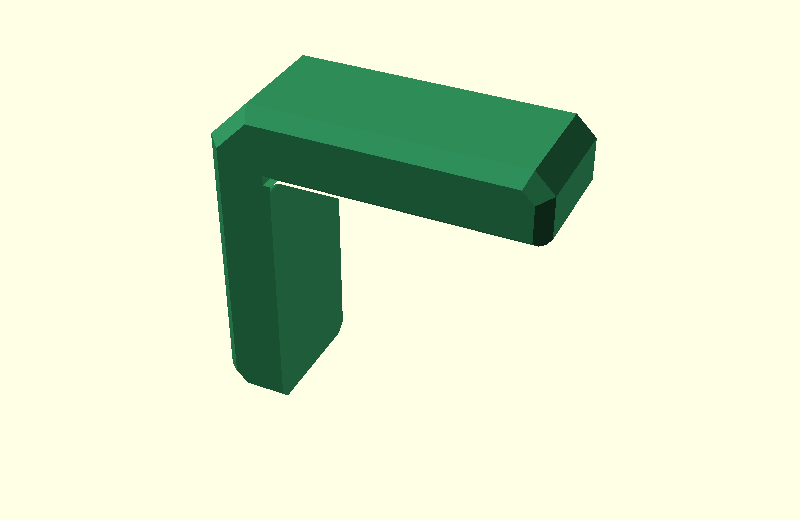
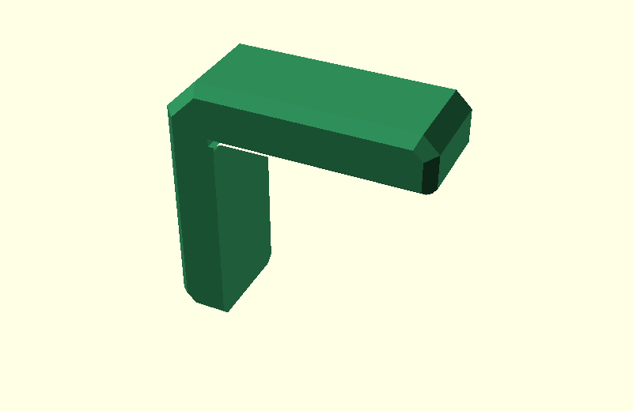
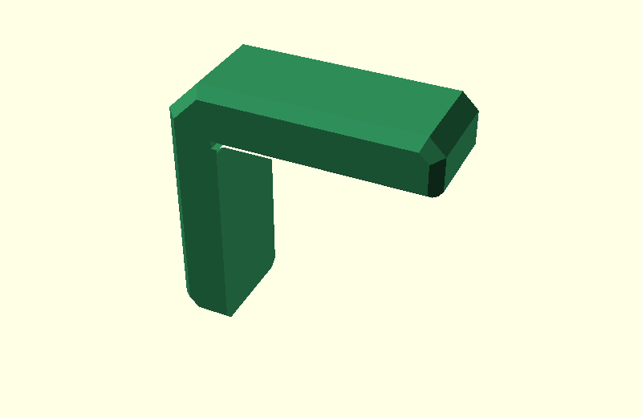

Corner Bracket: cs/ef hull experiment on one L-shape
This page deliberately keeps the geometry simple to follow:
the same L-shaped bracket body stays in the same place in every image.
Nothing is moved beside the bracket. There are no separate section drawings in the walkthrough. When a hull is explained, its two input volumes are simply shown transparently on the L itself.
The production model is not changed by this experiment.
0. L-shape with the existing cs chamfer

This is the real body(): the L-shaped bracket after the normal side-edge
chamfer cs, before the elephant-foot relief.
1. Current ef inputs on the same L

The L stays faintly visible.
The two colored objects are the current inputs to one of the two local elephant-foot hulls:
- blue: inner input at
Y = W/2-ef; - orange: outer input at
Y = W/2, expanded byef.
2. Current ef hull on the L

The red volume is the hull made from those two inputs.
3. Current result

This is the L after the two existing broad elephant-foot hulls are subtracted,
but before relief_corner_miters().
The small arm-tip defect is the only issue we are trying to solve.
4. Proposed inputs on the same L

The structure is unchanged: still two inputs, at the same two Y positions.
The only difference is that these input profiles are derived from the
already-cs-chamfered body(). Therefore the outer input already contains
the arm-tip side chamfer before hull() is called.
5. Proposed hull on the L

Again: one local hull, shown in place on the same L.
No new global construction is introduced.
6. Proposed result

This result uses the same two local elephant-foot hulls, but with the cs-aware inputs.
No separate relief_corner_miters() is applied here. The purpose of the
experiment is to see whether the minimal input change is sufficient.
Interactive source
Open
design/ef_cs_junction_explained.scad
and select junction_step.
The dropdown follows exactly the seven images above.